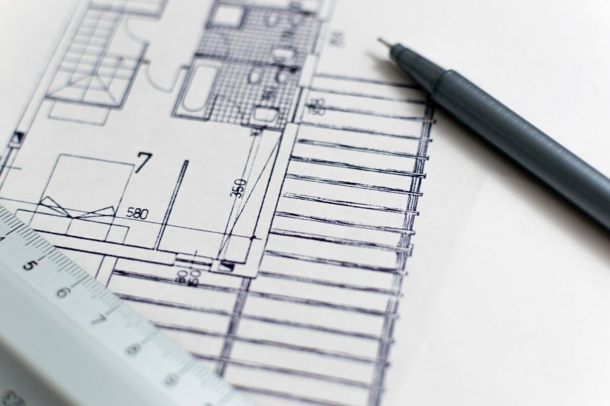
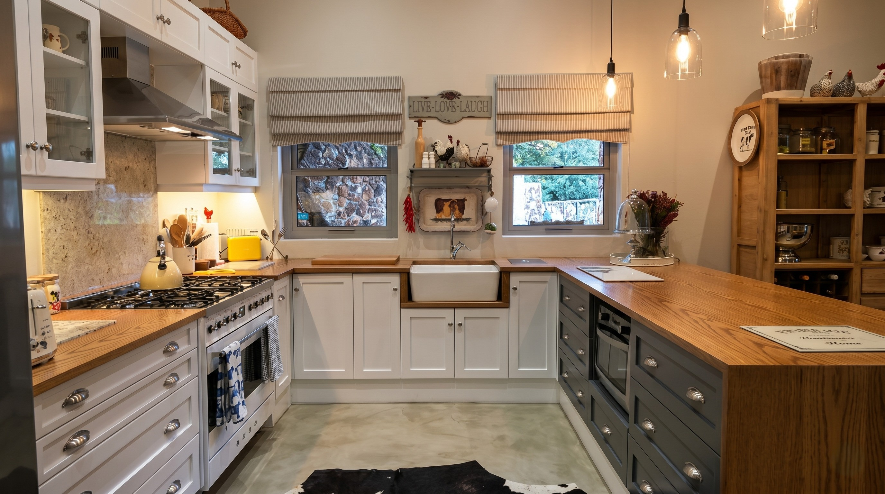
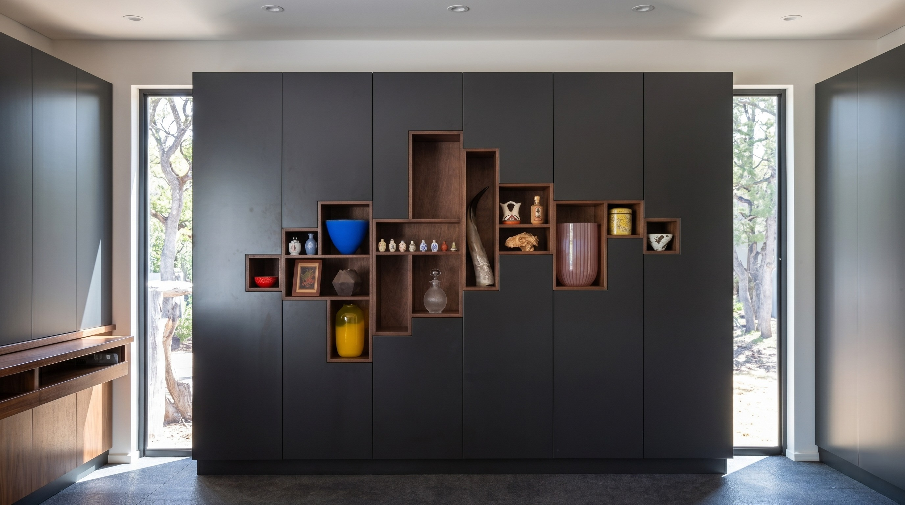
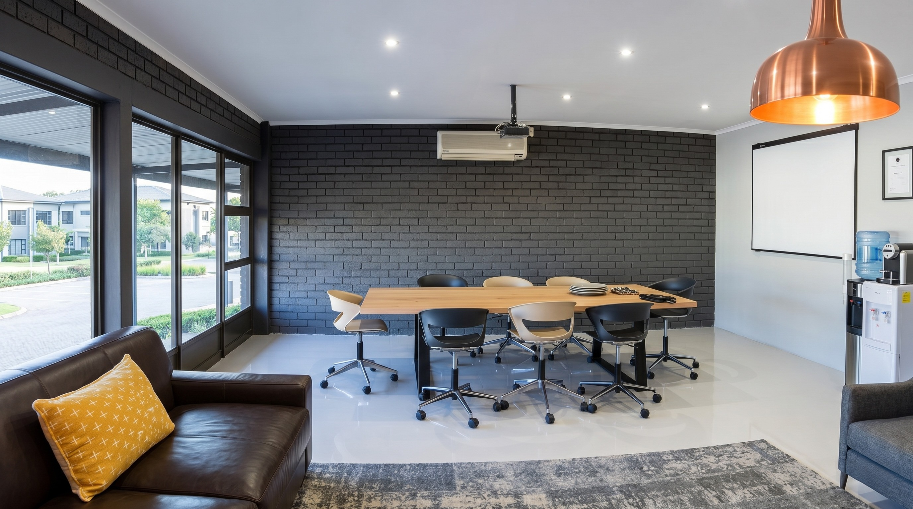
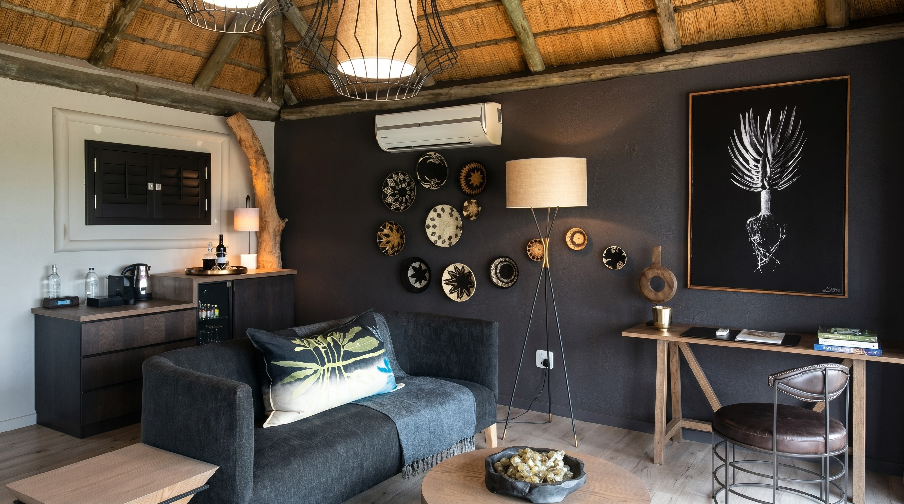
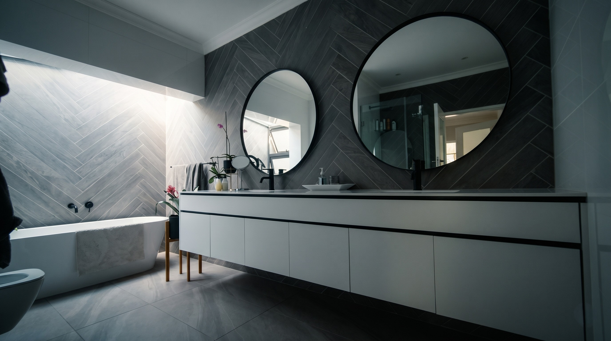
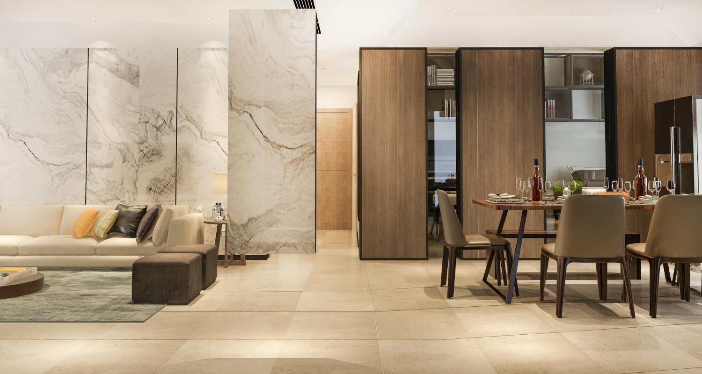

Mastering structural lines, respecting the timber.
We design, manufacture, and install architectural woodwork tailored to the layout of high-end homes and commercial studios.
At Schröder’s Joinery, we reject the notion of simple flat-pack assembly. Every commission represents a rigorous dialogue between client, designer, and craftsman.
We translate empty architectural volumes into fully realized spatial narratives, ensuring that form matches your daily routines and materials endure.
Our workshop merges modern computer-aided layouts with heritage woodworking joints to deliver projects that look custom and feel inevitable.

We meet in your space to analyze illumination, ergonomics, and structural boundaries. This establishes the material scope and aesthetic parameters.
Our design studio maps the custom layout to scale. We supply high-resolution visual models and precise elevation layouts for your approval.
Timber species are selected for grain direction and density. In our Kyalami workshop, components are detailed, joined, and dry-assembled under owner supervision.
We carry out the final installation with white-glove care, ensuring flush shadowlines, soft-close alignment, and respect for finished surfaces.

Bespoke culinary spaces designed around the mechanics of food prep, gathering, and home flow. We bypass off-the-shelf cabinets to sculpt layouts that balance premium timber panels, stone counters, and concealed appliance systems.
Tailored wardrobes, media consoles, and display shelving constructed to align flush with your home’s walls and cornices. We emphasize seamless joinery joints that keep storage secondary to the architecture of the space.


Productive studio spaces and executive suites configured to enhance clarity. We integrate wire routes directly inside solid desks, construct floor-to-ceiling book racks, and construct matching acoustic timber wall slats.
One-of-a-kind dining tables, server units, and sideboards shaped from hand-selected raw slabs. These are heirloom pieces built using traditional mortise-and-tenon joints that withstand generations of use.


Sanctuaries of restoration requiring specialist wood sealants. We manufacture floating vanity units, custom mirror trims, and structural cabinetry designed to withstand direct moisture exposure.
Cohesive spatial design where wood interfaces with drywall, plaster, and steel. From wall cladding and bespoke internal doors to custom ceiling lattices, we coordinate panels across multiple rooms.

A bespoke design is only as timeless as the timber it is built from. We select and secure premium, furniture-grade hardwoods suited to our South African climate.
Oak is a hard, heavy wood characterized by a coarse texture and highly prominent floral grain lines. Highly rot-resistant, it represents a strong, economical, and stable material. We value oak for its exceptional stainability — it takes oils and stains beautifully, allowing us to highlight its distinct growth ring pattern to suit your room's color scheme.
Mahogany is a classic hardwood with a reddish-brown color that naturally darkens over time when sealed. Featuring a subtle, fine, and straight grain, its texture is less dramatic and pleasing to the eye. It is highly valued for traditional furniture, executive boardroom tables, and decorative cladding where visual warmth and stability are required.
Maple is a very hard, heavy, and dense hardwood. Known for its light cream color and subtle brown growth lines, it yields a bright, clean, and modern finish. Due to its exceptional density and wear resistance, maple is perfect for high-traffic custom kitchen surfaces, floating worktops, and internal drawers requiring long-term durability.
Kiaat (also known as African Teak or Mukwa) is a highly sought-after local hardwood. It displays a dark brown heartwood contrasted with golden streaks of light-colored sapwood running through the grain. This makes a highly distinct and striking visual pattern. Very durable, and naturally borer and termite resistant, Kiaat is ideal for bespoke furniture that makes a bold, native statement.
Understanding the custom joinery process from initial measurements to installation leads to smooth project delivery.
Initial site visits and high-level brief meetings are free within Gauteng. For detailed 3D spatial visual renderings and technically detailed construction maps, we charge a design deposit. This deposit is fully credited against your final project production quote upon project kick-off.
A typical custom kitchen or full bedroom fitout requires 6 to 8 weeks from the date the technical drawings are signed off. This includes timber sourcing, panel matching, and dry-assembly in our workshop. On-site installation generally takes between 3 to 10 working days depending on complexity.
Yes. We regularly translate spatial briefs and CAD files from architectural firms into constructible workshop details. We coordinate with main site contractors to ensure plumbing and electrical points are aligned before joinery is delivered.
For high-humidity areas like kitchens and bathrooms, we seal solid wood and veneers with specialized marine-grade polyurethane oils or low-sheen acid-catalyzed lacquers. This provides deep fiber protection without masking the wood's organic texture.
Whether you have detailed architectural blueprints ready or need to consult on spatial design concepts, our master craftsmen are ready to bring your ideas to life.